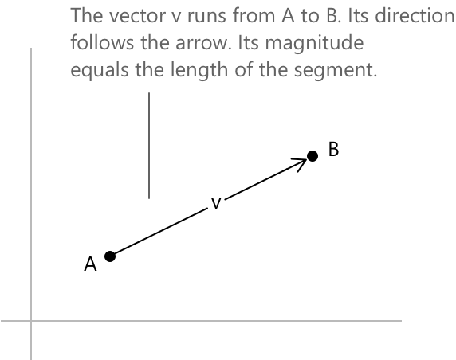
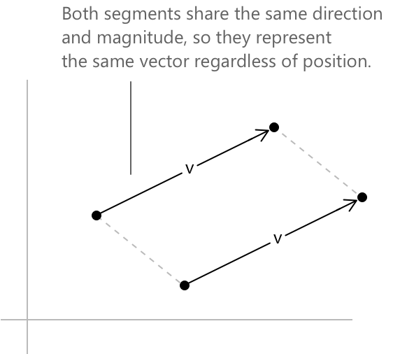
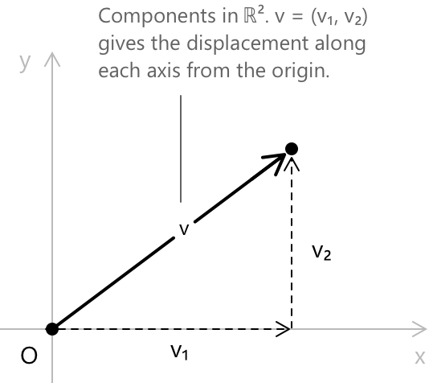
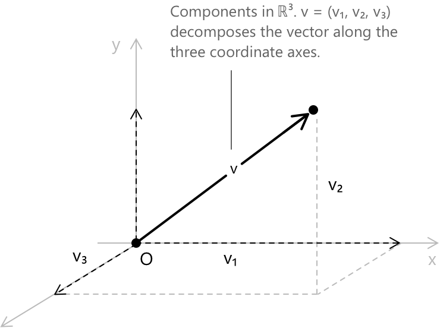
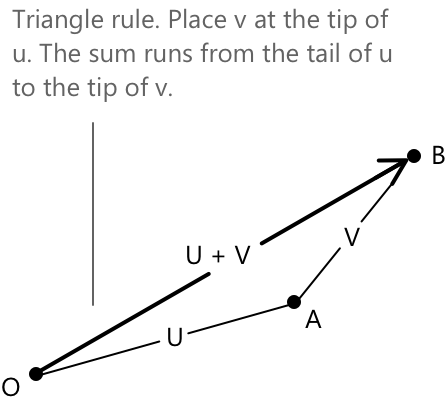
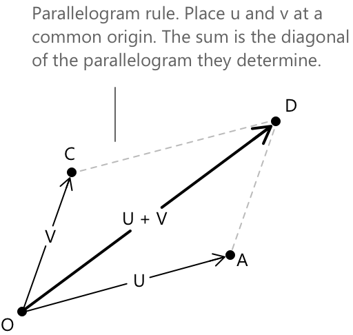

Вектори
Геометричне представлення
Вектор — це величина, що характеризується як модулем, так і напрямком, на відміну від скаляра, який описується лише модулем. Ця відмінність природно виникає в геометрії та фізиці, де такі величини, як переміщення, швидкість та сила, потребують інформації про напрямок, яку не може закодувати одне дійсне число. Формальний підхід, розроблений тут, є алгебраїчним і застосовується до векторів у евклідових просторах \(\mathbb{R}^2\) та \(\mathbb{R}^3\), яких достатньо для більшості базових застосувань у математичному аналізі, геометрії та механіці. Вектор на площині або в тривимірному просторі представляється як спрямований відрізок, тобто відрізок із визначеною початковою та кінцевою точками. Напрямок відрізка вказує на орієнтацію вектора, а його довжина представляє модуль.

Два спрямовані відрізки, що мають однакову довжину та однаковий напрямок, вважаються такими, що представляють один і той самий вектор, незалежно від їхнього положення в просторі. Ця еквівалентність є основою поняття вільного вектора, який повністю характеризується своїм напрямком і модулем, незалежно від того, де він накреслений.

Зазвичай вектори позначають жирними літерами, такими як \(\mathbf{v}\), або, альтернативно, за допомогою стрілки \(\vec{v}\). Нульовий вектор, що позначається \(\mathbf{0}\), має нульовий модуль і не має визначеного напрямку; він відіграє роль нейтрального елемента за додаванням у векторній арифметиці.
Компоненти та координатне представлення
У декартовій системі координат кожен вектор у \(\mathbb{R}^n\) може бути виражений через його компоненти вздовж координатних осей. Вектор \(\mathbf{v}\) у \(\mathbb{R}^2\) записується як впорядкована пара:
\[\mathbf{v} = (v_1,\, v_2) \in \mathbb{R}^2\]

Вектор у \(\mathbb{R}^3\) записується як впорядкована трійка.
\[ \mathbf{v} = (v_1,\, v_2,\, v_3) \in \mathbb{R}^3\]

Дійсні числа \(v_1, v_2, v_3\) називаються компонентами \(\mathbf{v}\) відносно обраної системи координат. Стандартні базисні вектори в \(\mathbb{R}^3\) визначаються наступним чином.
\[ \mathbf{i} = (1,\,0,\,0) \qquad \mathbf{j} = (0,\,1,\,0) \qquad \mathbf{k} = (0,\,0,\,1) \]
Кожен вектор у \(\mathbb{R}^3\) може бути виражений як лінійна комбінація цих базисних векторів.
\[ \mathbf{v} = v_1\,\mathbf{i} + v_2\,\mathbf{j} + v_3\,\mathbf{k} \] У цьому виразі кожен скалярний коефіцієнт визначає внесок відповідного базисного вектора: \(v_1\) масштабує \(\mathbf{i}\) вздовж осі \(x\), \(v_2\) масштабує \(\mathbf{j}\) вздовж осі \(y\), а \(v_3\) масштабує \(\mathbf{k}\) вздовж осі \(z\). Сума цих трьох масштабованих базисних векторів точно відтворює \(\mathbf{v}\). Наприклад, вектор \((3, -1, 2)\) записується як \(3\,\mathbf{i} – \mathbf{j} + 2\,\mathbf{k}\), що означає переміщення на три одиниці в напрямку \(x\), на одну одиницю в негативному напрямку \(y\) та на дві одиниці в напрямку \(z\). Таке представлення робить явним розклад \(\mathbf{v}\) на складові вздовж кожного координатного напрямку.
Векторні операції
Основними алгебраїчними операціями над векторами є додавання, віднімання та скалярне множення. Ці операції визначені покомпонентно і мають чітке геометричне тлумачення. Дано два вектори \(\mathbf{u} = (u_1, u_2, u_3)\) та \(\mathbf{v} = (v_1, v_2, v_3)\) у \(\mathbb{R}^3\), їхня сума визначається наступним чином.
\[ \mathbf{u} + \mathbf{v} = (u_1+v_1,\; u_2+v_2,\; u_3+v_3) \]
Геометрично додавання векторів відповідає розміщенню початкової точки \(\mathbf{v}\) у кінцевій точці \(\mathbf{u}\). Результуючий вектор з'єднує початкову точку \(\mathbf{u}\) з кінцевою точкою \(\mathbf{v}\). Ця побудова відома як правило трикутника.

Еквівалентне формулювання, правило паралелограма, передбачає розміщення обох векторів у спільній початковій точці та ідентифікацію їхньої суми з діагоналлю паралелограма, який вони визначають.

Скалярне множення на дійсне число \(\lambda \in \mathbb{R}\) рівномірно масштабує кожну компоненту.
\[ \lambda\,\mathbf{v} = (\lambda v_1,\; \lambda v_2,\; \lambda v_3) \]
Коли \(\lambda > 0\), результуючий вектор має той самий напрямок, що і \(\mathbf{v}\), а його величина масштабується на \(\lambda\). Коли \(\lambda < 0\), напрямок змінюється на протилежний. Коли \(\lambda = 0\), результатом є нульовий вектор. Віднімання визначається шляхом поєднання двох попередніх операцій: \(\mathbf{u} – \mathbf{v} = \mathbf{u} + (-1)\mathbf{v}\), що дає \((u_1-v_1,\, u_2-v_2,\, u_3-v_3)\).
Алгебраїчні властивості
Операції додавання векторів та скалярного множення задовольняють набір фундаментальних властивостей, які виконуються для всіх векторів \(\mathbf{u}, \mathbf{v}, \mathbf{w} \in \mathbb{R}^n\) та всіх скалярів \(\lambda, \mu \in \mathbb{R}\).
-
Додавання є комутативним, тобто \(\mathbf{u} + \mathbf{v} = \mathbf{v} + \mathbf{u}\), та асоціативним, так що \((\mathbf{u} + \mathbf{v}) + \mathbf{w} = \mathbf{u} + (\mathbf{v} + \mathbf{w}).\)
-
Нульовий вектор \(\mathbf{0}\) виступає як нейтральний елемент за додаванням, задовольняючи \(\mathbf{v} + \mathbf{0} = \mathbf{v}\) для кожного \(\mathbf{v}\), і кожен вектор \(\mathbf{v}\) має протилежний вектор \(-\mathbf{v} = (-1)\mathbf{v}\) такий, що \(\mathbf{v} + (-\mathbf{v}) = \mathbf{0}.\)
-
Скалярне множення розподіляється відносно додавання векторів згідно з \(\lambda(\mathbf{u} + \mathbf{v}) = \lambda\mathbf{u} + \lambda\mathbf{v}\), та відносно додавання скалярів згідно з \((\lambda + \mu)\mathbf{v} = \lambda\mathbf{v} + \mu\mathbf{v}\). Скалярне множення сумісне зі скалярним добутком: \((\lambda\mu)\mathbf{v} = \lambda(\mu\mathbf{v})\), а скаляр \(1\) виступає як нейтральний елемент за множенням, при цьому \(1 \cdot \mathbf{v} = \mathbf{v}.\)
Ці властивості не є випадковими: разом вони становлять визначальні аксіоми векторного простору. Множина \(\mathbb{R}^n\) з цими двома операціями утворює векторний простір над полем \(\mathbb{R}\), структура якої буде розглянута більш загально в статті про векторні простори.
Норма вектора
Норма, або величина, вектора \(\mathbf{v} = (v_1, v_2, v_3)\) — це невипадкове дійсне число, яке вимірює його довжину. Вона визначається наступним виразом:
\[ \|\mathbf{v}\| = \sqrt{v_1^2 + v_2^2 + v_3^2} \]
Ця формула є прямим наслідком теореми Піфагора, застосованої ітеративно вздовж координатних осей. У \(\mathbb{R}^2\) аналогічна формула має вигляд:
\[\|\mathbf{v}\| = \sqrt{v_1^2 + v_2^2}\]
Як приклад, розглянемо вектор \(\mathbf{v} = (2, -3, 6)\) у \(\mathbb{R}^3\). Його норма обчислюється шляхом додавання квадратів його компонент і добування квадратного кореня:
\[ \begin{align} \|\mathbf{v}\| &= \sqrt{2^2+(-3)^2+6^2} \\[6pt] &= \sqrt{4+9+36} \\[6pt] &= \sqrt{49} \\[6pt] &= 7 \end{align} \]
Кожен доданок під радикалом відповідає квадрату внеску одного координатного напрямку, і результат підтверджує, що \(\mathbf{v}\) має довжину \(7\). Вектор, норма якого дорівнює одиниці, називається одиничним вектором. Для будь-якого ненульового вектора \(\mathbf{v}\) завжди можливо побудувати одиничний вектор, що вказує в тому самому напрямку, поділивши \(\mathbf{v}\) на його норму. Ця операція називається нормалізацією.
\[ \hat{\mathbf{v}} = \frac{\mathbf{v}}{\|\mathbf{v}\|} \]
Результуючий вектор \(\hat{\mathbf{v}}\) за побудовою задовольняє рівність \(\|\hat{\mathbf{v}}\| = 1\).
Скалярний добуток
Скалярний добуток, також відомий як скалярний продукт або внутрішній добуток, є бінарною операцією, яка приймає два вектори та повертає дійсне число. Для \(\mathbf{u}, \mathbf{v} \in \mathbb{R}^n\) він визначається алгебраїчно як сума добутків відповідних компонент.
\[ \mathbf{u} \cdot \mathbf{v} = \sum_{i=1}^{n} u_i\, v_i = u_1 v_1 + u_2 v_2 + \cdots + u_n v_n \]
Скалярний добуток має еквівалентне геометричне формулювання через кут \(\theta\) між двома векторами.
\[ \mathbf{u} \cdot \mathbf{v} = \|\mathbf{u}\| \,\|\mathbf{v}\|\cos\theta \]
Множник \(\cos\theta\) пов'язує скалярний добуток із косинусом кута між двома векторами, і саме цей зв'язок робить скалярний добуток потужним інструментом для вимірювання співвідношення напрямків та ортогональності. Коли \(\mathbf{u} \cdot \mathbf{v} = 0\) і жоден із векторів не є нульовим, звідси випливає, що \(\cos\theta = 0\), отже \(\theta = \pi/2\). Два вектори, що задовольняють цю умову, називаються ортогональними. Навпаки, коли вектори паралельні, \(\theta = 0\) або \(\theta = \pi\), і скалярний добуток дорівнює \(\pm\|\mathbf{u}\|,\|\mathbf{v}\|\). Скалярний добуток також дає прямий вираз для норми: \(|\mathbf{v}|^2 = \mathbf{v} \cdot \mathbf{v}\). Як приклад, розглянемо \(\mathbf{u} = (1, 2, -1)\) та \(\mathbf{v} = (3, 0, 3)\). Скалярний добуток обчислюється наступним чином.
\[ \begin{align} \mathbf{u} \cdot \mathbf{v} &= (1)(3)+(2)(0)+(-1)(3) \\[6pt] &= 3+0-3 \\[6pt] &= 0 \end{align} \]
Оскільки результат дорівнює нулю, два вектори є ортогональними. Цей висновок можна перевірити геометрично, зауваживши, що жоден вектор не є скалярним множником іншого і їхні компоненти точно задовольняють умову ортогональності.
Векторний добуток
Векторний добуток — це операція, визначена для векторів у \(\mathbb{R}^3\), яка приймає два вектори та повертає третій вектор. На відміну від скалярного добутку, результатом є не скаляр, а вектор, і з цієї причини операція також називається векторним добутком. Дано \(\mathbf{u} = (u_1, u_2, u_3)\) та \(\mathbf{v} = (v_1, v_2, v_3)\), їхній векторний добуток визначається за наступною формулою, вираженою як визначник матриці.
\[ \mathbf{u} \times \mathbf{v} = \begin{vmatrix} \mathbf{i} & \mathbf{j} & \mathbf{k} \\[6pt] u_1 & u_2 & u_3 \\[6pt] v_1 & v_2 & v_3 \end{vmatrix} \]
Розклад за першим рядком дає явну форму компонент.
\[ \mathbf{u} \times \mathbf{v} = (u_2 v_3 - u_3 v_2,\; u_3 v_1 – u_1 v_3,\; u_1 v_2 - u_2 v_1) \]
Отриманий вектор є ортогональним як до \(\mathbf{u}\), так і до \(\mathbf{v}\), що можна перевірити, обчисливши скалярні добутки \((\mathbf{u} \times \mathbf{v}) \cdot \mathbf{u}\) та \((\mathbf{u} \times \mathbf{v}) \cdot \mathbf{v}\), кожен з яких дорівнює нулю. Напрямок \(\mathbf{u} \times \mathbf{v}\) визначається за правилом правої руки: якщо пальці правої руки загинаються від \(\mathbf{u}\) до \(\mathbf{v}\), то великий палець вказує напрямок \(\mathbf{u} \times \mathbf{v}\). Модуль векторного добутку має природну геометричну інтерпретацію: \[ \|\mathbf{u} \times \mathbf{v}\| = \|\mathbf{u}\|\,\|\mathbf{v}\|\sin\theta \]
Ця величина дорівнює площі паралелограма, побудованого на векторах \(\mathbf{u}\) та \(\mathbf{v}\). Зокрема, \(\mathbf{u} \times \mathbf{v} = \mathbf{0}\) тоді і тільки тоді, коли \(\sin\theta = 0\), тобто тоді і тільки тоді, коли вектори паралельні. Векторний добуток є антикомутативним: \(\mathbf{v} \times \mathbf{u} = -(\mathbf{u} \times \mathbf{v})\), що відображає зміну орієнтації при зміні порядку операндів.
Як конкретний приклад, розглянемо \(\mathbf{u} = (1, 2, 3)\) та \(\mathbf{v} = (4, 5, 6)\). Застосування формули компонент дає наступне: \[ \begin{align} \mathbf{u} \times \mathbf{v} &= (u_2v_3-u_3v_2,\; u_3v_1-u_1v_3,\; u_1v_2-u_2v_1) \\[6pt] &= (2\cdot6-3\cdot5,\; 3\cdot4-1\cdot6,\; 1\cdot5-2\cdot4) \\[6pt] &= (12-15,\; 12-6,\; 5-8) \\[6pt] &= (-3,\; 6,\; -3) \end{align} \] Можна перевірити, що результат є ортогональним як до \(\mathbf{u}\), так і до \(\mathbf{v}\), обчисливши два скалярні добутки. Для першого: \[ (-3,\;6,\;-3)\cdot(1,\;2,\;3) = - 3 + 12 - 9 = 0 \] і для другого:
\[ (-3,\;6,\;-3)\cdot(4,\;5,\;6) = – 12 + 30 – 18 = 0 \]
Обидва результати дорівнюють нулю, що підтверджує, що \(\mathbf{u} \times \mathbf{v}\) перпендикулярний до обох множників.